专题10 一元一次方程基础应用题分类训练02

考点01 古代问题
考点02 阶梯计费问题
考点03 配套问题
考点04 新能源相关问题
考点05 比例相关问题
考点06 日历问题

 考点01 古代问题
考点01 古代问题
1．牧童分杏各争竞，不知人数不知杏．三人五个多十枚，四人八枚两个剩．问：有几个牧童几个杏？（选自《算法统宗》）．题目大意：牧童们要分一堆杏，不知道人数也不知道有多少个杏．若3人一组，每组5个杏，则多10个杏；若4人一组，每组8个杏，则多2个杏．求有几个牧童？几个杏？
【答案】有24个牧童，50个杏．
【分析】本题考查一元一次方程的应用，掌握知识点是解题的关键．
设牧童有 人，根据两种分法中杏的总数不变这一等量，列出一元一次方程，求出x的值，即可解答．
人，根据两种分法中杏的总数不变这一等量，列出一元一次方程，求出x的值，即可解答．
【详解】解：设牧童有人，根据题意，得
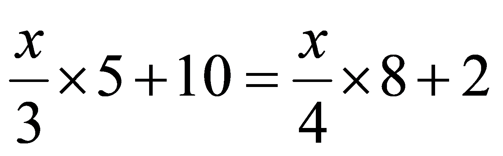
，解得 ，
，
所以
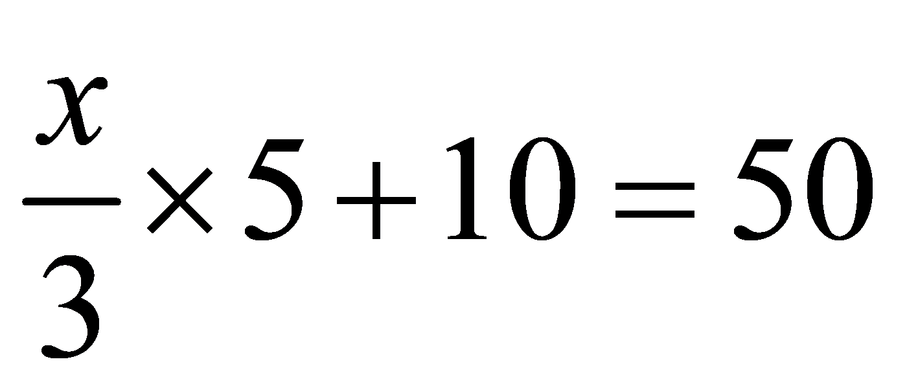
．答：有24个牧童，50个杏．
2．在明代数学家程大位（1533—1606）所著的《算法统宗》中有这样一道题：“假如井不知深，先将绳三折入井，绳长四尺；后将绳四折入井，亦长一尺．问井深及绳长各若干?”
题意是：“用绳子测量井深，把绳子折成三折来量，井外余绳4尺；把绳子折成四折来量，井外余绳1尺．井深和绳长各是多少?”
请列方程解决这个问题．
【答案】井深8尺，绳长36尺
【分析】此题主要考查了一元一次方程的应用，根据题意找准等量关系，正确列出方程是此题的关键．
设井深尺，由两次测量绳长不变列出方程求解即可．
【详解】解：设井深尺，
根据题意列方程得
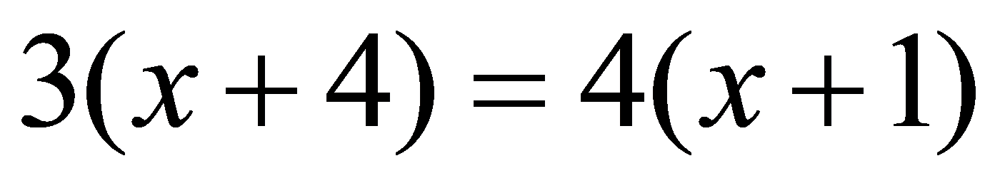
，解得 ，
，
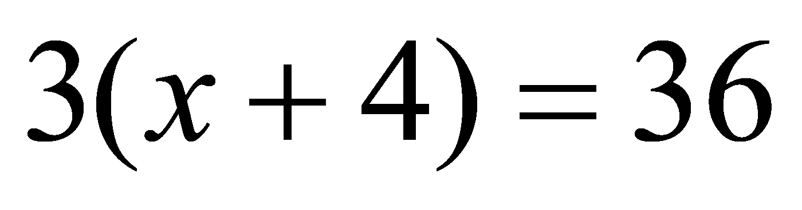
．答：井深8尺，绳长36尺．
3．《九章算术》中记载有一道关于“盈不足术”的经典问题，其原文表述如下：“今有共买鸡，人出九，盈一十一；人出六，不足十六．问：人数、鸡价各几何？”译文为：有若干人一起买一只鸡，若每人出9钱，则多出11钱；若每人出6钱，则还差16钱．求买鸡的人数、一只鸡的价格各是多少？
【答案】买鸡的人数为9人，一只鸡的价格为70钱
【分析】本题主要考查了列一元一次方程解决实际问题，解题的关键是找出等量关系，列出方程求解．
设买鸡的人数为人，根据两种购买方式，列出方程求解即可．
【详解】解：设买鸡的人数为人，根据题意得，
 ，
，
解得 ，
，
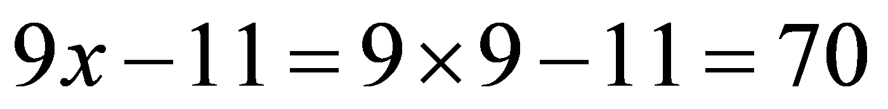
，∴买鸡的人数为9人，一只鸡的价格为70钱．
4．《九章算术》中有这样一段记载：今有善行者行一百步，不善行者行六十步．大意为：同样时间内，走路快的人能走100步，走路慢的人只能走60步．假定两者步长相等，据此回答以下问题：
(1)走路慢的人先走100步，走路快的人开始追赶，当走路慢的人再走600步时，请问谁在前面？两人相隔多少步？
(2)走路慢的人先走200步，走路快的人走多少步才能追上走路慢的人？
【答案】(1)走路快的人在前面，两人相隔300步
(2)500步
【分析】本题考查了列一元一次方程解实际问题的运用，一元一次方程的解法的运用，解决本题的关键是根据题意列出正确的方程．
（1）设当走路慢的人再走600步时，走路快的人走x步，根据同样时间内，走路快的人能走100步，走路慢的人只能走60步，列方程求解即可；
（2）设走路快的人走y步才能追上走路慢的人，根据同样时间内，走路快的人能走100步，走路慢的人只能走60步，及追及问题可列方程求解．
【详解】（1）解：设当走路慢的人再走600步时，走路快的人走x步，
由题意得：
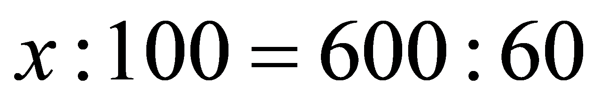

解得：
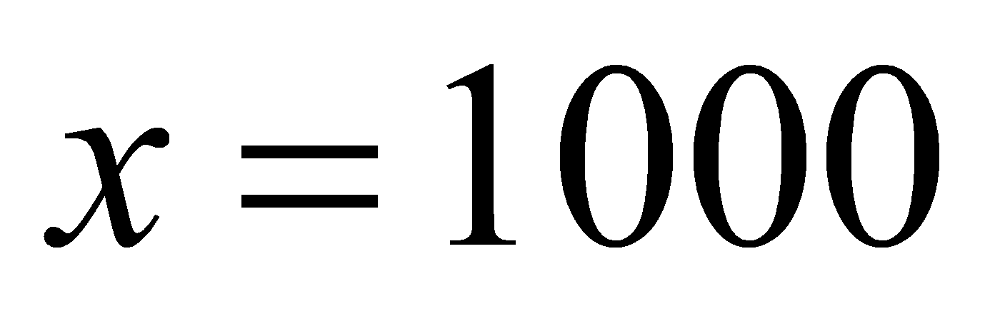
，∴两人相隔
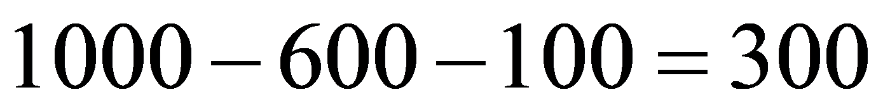
（步），答：当走路慢的人再走600步时，走路快的人在前面，两人相隔300步；
（2）解：设走路快的人走y步才能追上走路慢的人，
由题意得：

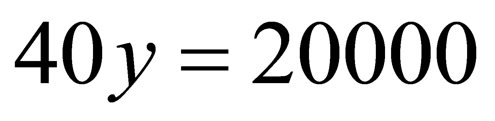
解得： ，
，
答：走路快的人走500步才能追上走路慢的人．
5．《孙子算经》中有一题；今有妇人河上荡杯，津吏问：杯何以多？妇人曰有客．吏曰：客几何？妇人曰：二人共饭，三人共羹，四人共肉，凡用杯六十五，不知客几何？大意：有一位妇女在河边洗碗，管理桥梁的官吏见了，问道：“你要洗的碗为什么这样多？”妇人回答说：“家里来了客人．”官吏又问：“来了多少客人？”妇人说：“我家来的客人，2人共用一只饭碗，3人共用一只汤碗，4人共用一只肉碗，总共用了65只碗．请你算算吧，我家的客人有多少个？”请解决这道古题．
【答案】60人
【分析】本题考查了一元一次方程的应用以及数学常识，解题的关键是找准等量关系，正确列出一元一次方程．
设妇人家中来了位客人，则共使用 只饭碗，
只饭碗，
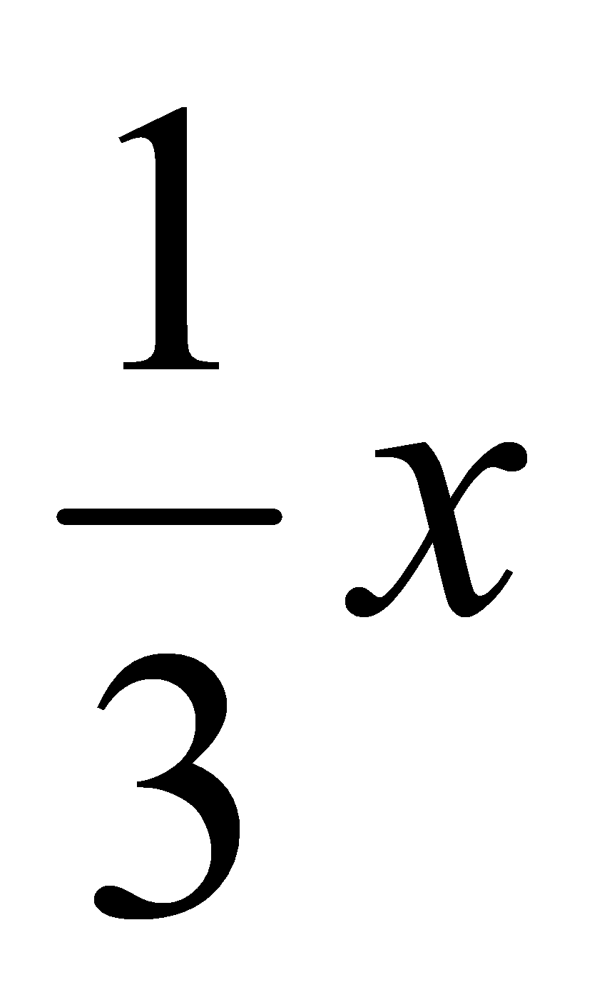
只汤碗，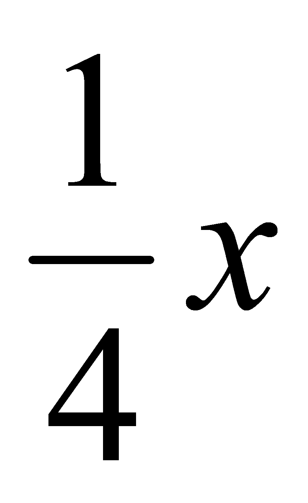
只肉碗，根据共用了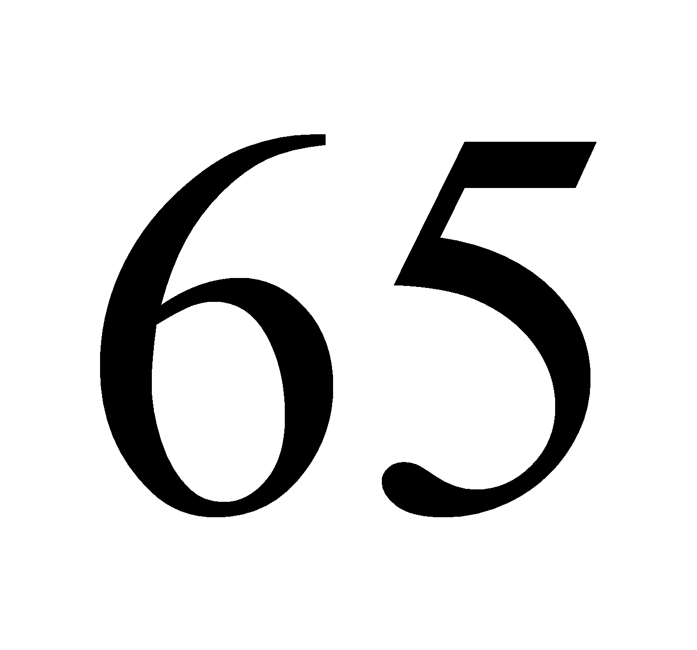
只碗，列方程求解，即可得出结论．【详解】解：设妇人家中来了位客人，
则共使用只饭碗，只汤碗，只肉碗，
依题意，得
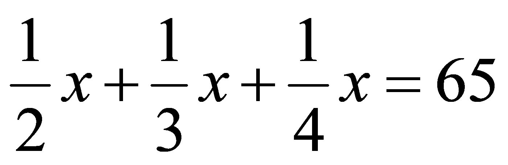
，解得
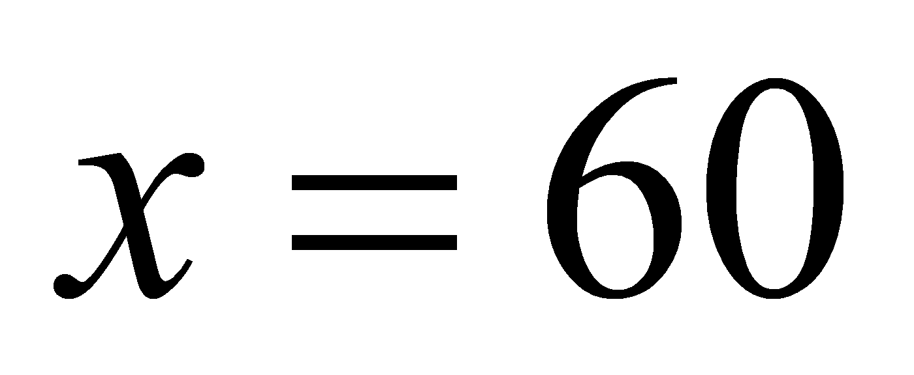
．故妇人家中来了 位客人．
位客人．
6．《九章算术》是人类科学史上应用数学的“算经之首”，书中记载：清明游园，共坐八船，大船满六，小船满四，三十八学子，满船坐观，请问客家，大小几船？其大意为：清明时节出去游园，所有人共坐了8只船，大船每只坐6人，小船每只坐4人，38人刚好坐满，问：大小船各有几只？
【答案】大船有3只，小船有5只
【分析】本题考查了一元一次方程的应用，设大船有只，则小船有
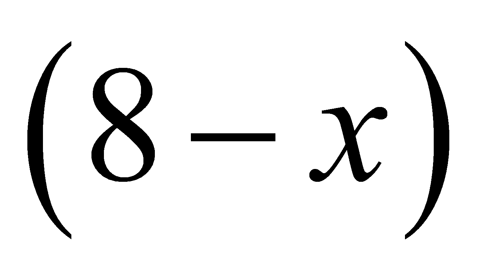
只，根据38人刚好坐满8只船，可列出关于x的一元一次方程，解之可得出大船的只数，再将其代入中，即可求出小船的只数．【详解】解：设大船有只，则小船有只，
根据题意得：
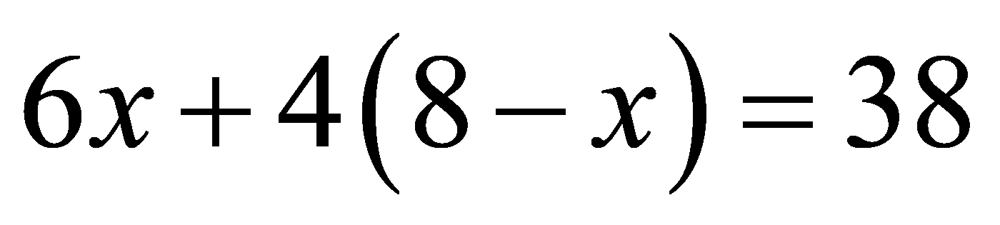
，解得： ，
，
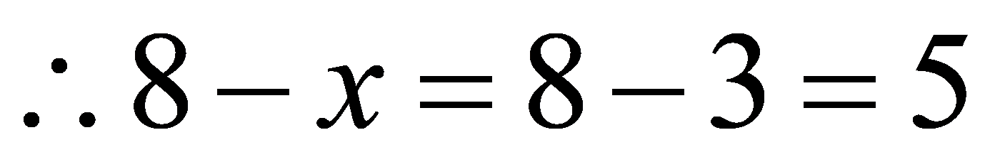
（只），答：大船有3只，小船有5只．
7．我国明代数学家程大位编撰的《算法统宗》记载了“绳索量竿”问题：“一条竿子一条索，索比竿子长一托，折回索子来量竿，却比竿子短一托，问索、竿各长几何？”译文为：“有一根竿和一条绳，若用绳去量竿，则绳比竿长5尺；若将绳对折后再去量竿，则绳比竿短5尺，问绳和竿各有多长？”（注：“托”和“尺”为古代的长度单位，1托 尺）
尺）
【答案】绳子长20尺，竿长15尺
【分析】本题主要考查了一元一次方程的应用，解题的关键是根据等量关系，列出方程．设绳子长x尺，则竿长
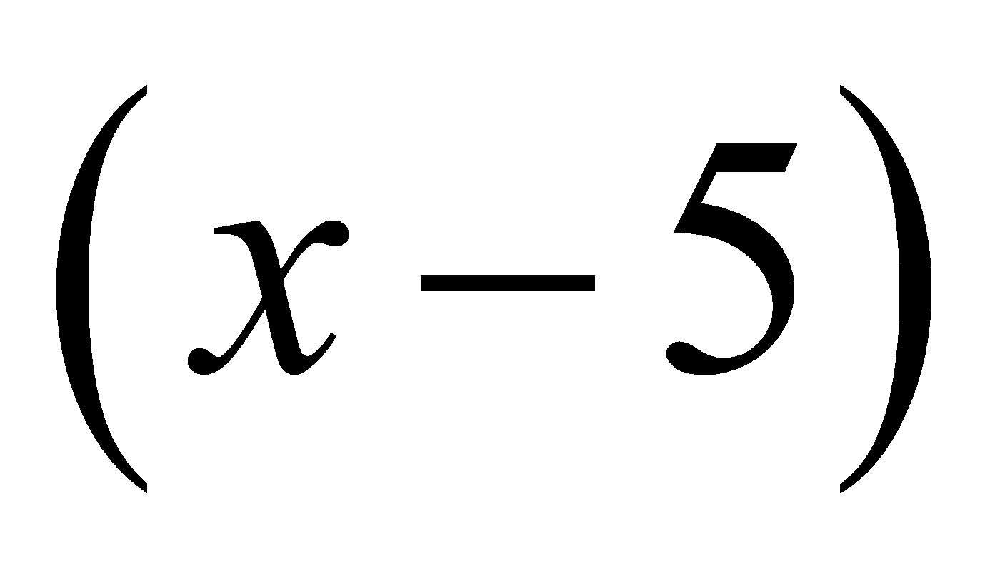
尺，根据用绳去量竿，则绳比竿长5尺，若将绳对折后再去量竿，则绳比竿短5尺，列出方程，解方程即可．【详解】解：设绳子长x尺，则竿长尺，根据题意得：
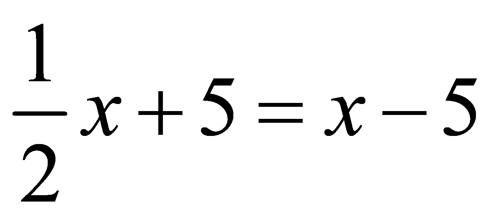
，解得： ，
，
当时，
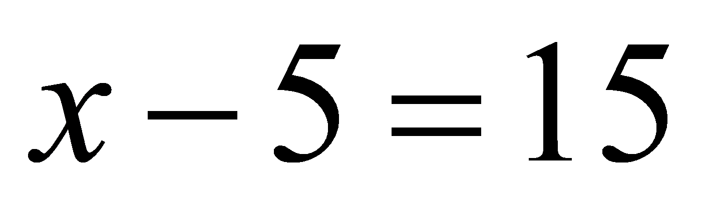
，答：绳子长20尺，竿长15尺．
8．中国古代人民在生产生活中发现了许多数学问题，在《孙子算经》中记载了这样一个问题，大意为：有若干人乘车，若每车乘坐 人，则
人，则 辆车无人乘坐；若每车乘坐人，则
辆车无人乘坐；若每车乘坐人，则 人无车可乘，问共有多少辆车，多少人？
人无车可乘，问共有多少辆车，多少人？
【答案】有 辆车，
辆车， 个人．
个人．
【分析】本题考查了一元一次方程的应用，设有辆车，若每车乘坐人，则辆车无人乘坐，则总人数可表示为
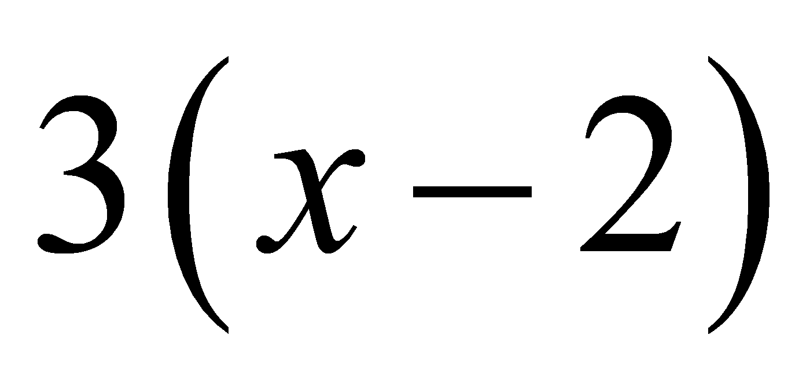
；若每车乘坐人，则人无车可乘，则总人数可表示为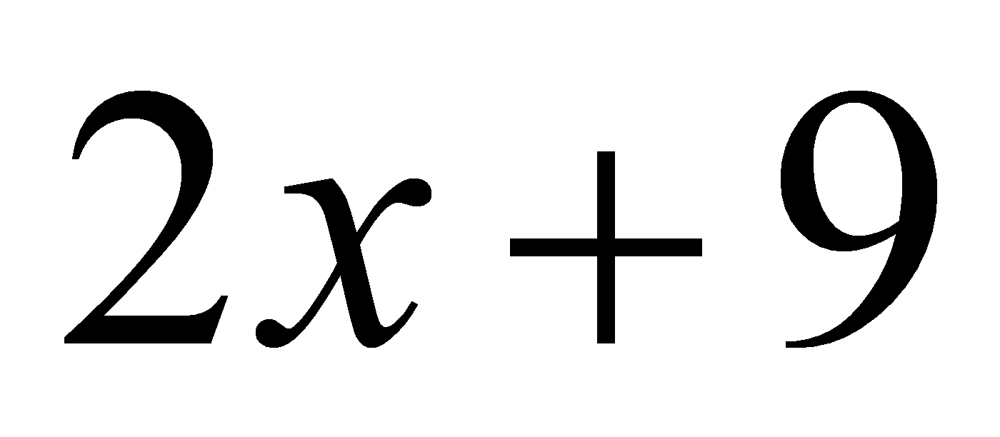
，可列方程： ，解方程求出车的数量，根据车的数量求出人数即可．
，解方程求出车的数量，根据车的数量求出人数即可．【详解】解：设有辆车，
根据题意可得：，
解得：
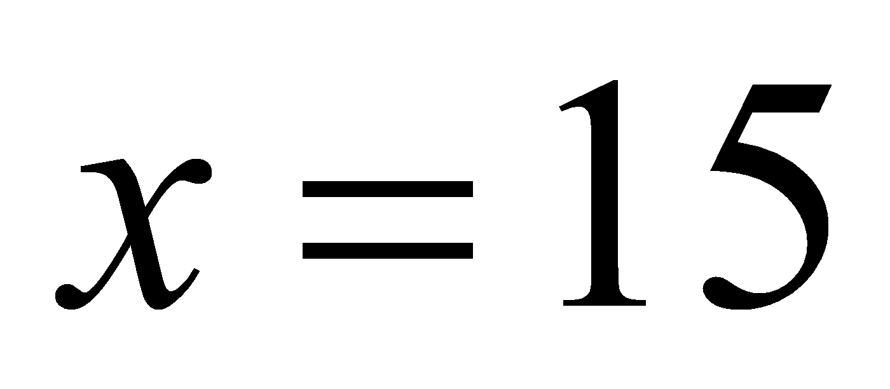
，人数为：
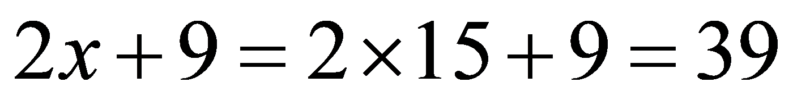
(人)，答：共有辆车，个人．
考点02 阶梯计费问题
9．某市居民的燃气收费，按户为基础、年为周期进行阶梯收费，具体如表所示．请根据表中信息解答下列问题：
阶梯 | 年用气量x（ | 收费单价 |
第一阶梯 | 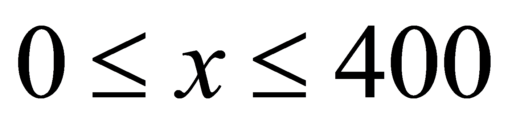 的部分 |
|
第二阶梯 | 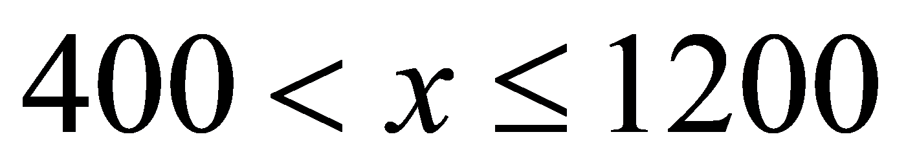 的部分 | 3.15元/ |
第三阶梯 |
| 3.63元/ |
备注：若家庭人口不超过四人，按照上表进行收费；若超过四人，每增加一人，第一、二阶梯年用气量的上限分别增加 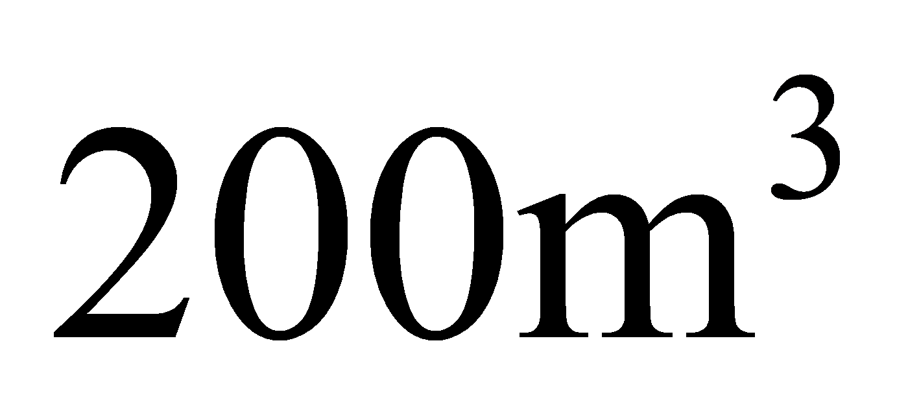 ． | ||
 ）
） 元/
元/ 以上的部分
以上的部分(1)一户3人家庭，若年用气量为 ，则该年此户需缴纳燃气费用为_________元；若年用气量为
，则该年此户需缴纳燃气费用为_________元；若年用气量为
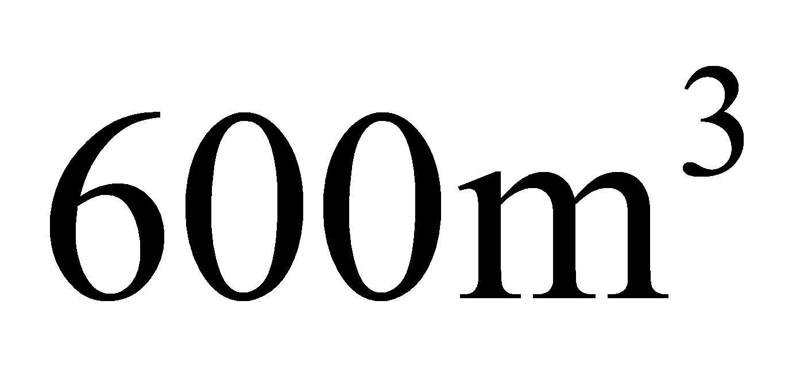
，则该年此户需缴纳燃气费用为_________元；(2)一户不超过4人的家庭，年用气量x超过了
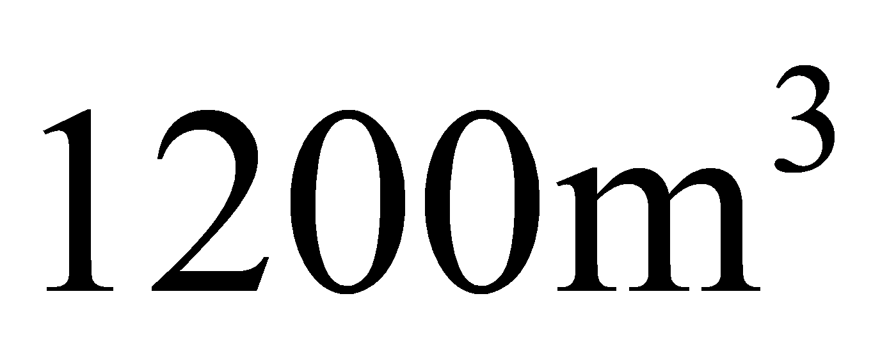
，设该年此户需缴纳燃气费用为y元，请用含x的代数式表示y；(3)甲户家庭人口为3人，乙户家庭人口为5人，2025年甲乙两户缴纳的燃气费用均为3951元．请判断甲乙两户年用气量分别达到哪个阶梯？并求出2025年甲乙两户年用气量分别是多少立方米（结果精确到  ）？
）？
【答案】(1)
267，1698
(2)
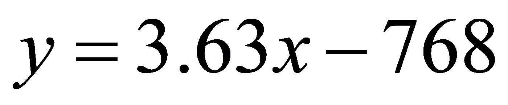
(3)
甲户该年的用气量达到了第三阶梯，用气量为
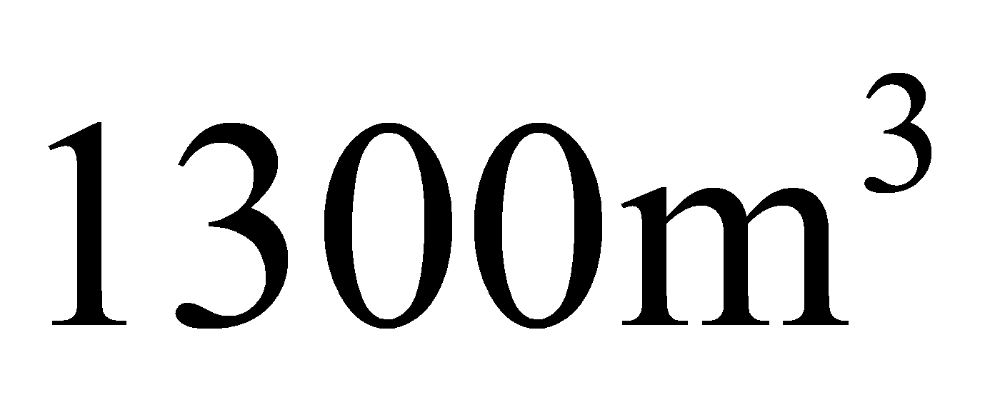
，乙户该年的用气量达到第二阶梯，用气量为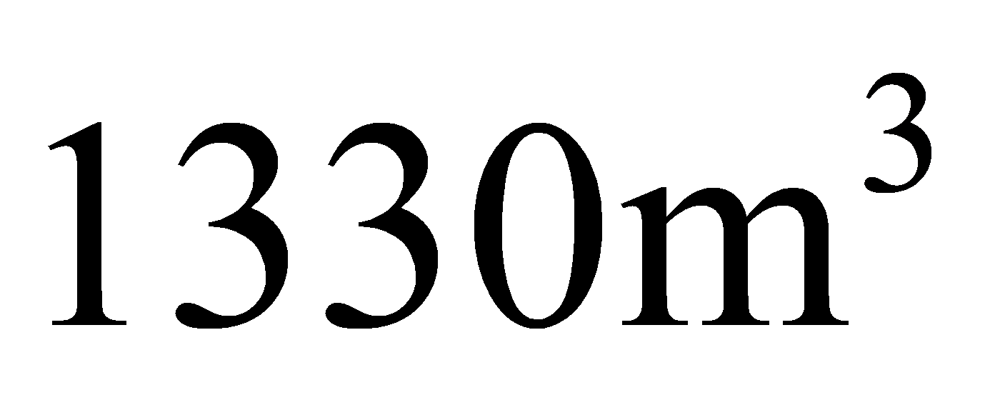
【分析】本题主要考查代数式的运用，理解数量关系正确列式计算即可求解．
（1）根据题意，结合表格分别按照不同阶梯的计费方式，列式求解即可；
（2）根据阶梯收费方式列出数量关系即可；
（3）根据题意，当甲户用气量为时，得到
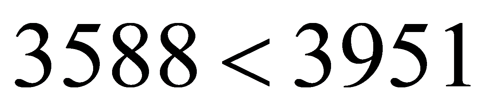
，结合（2）的计算即可求出甲户的情况；根据乙户的人口得到阶梯收费的计算方法，当乙用户用气量达到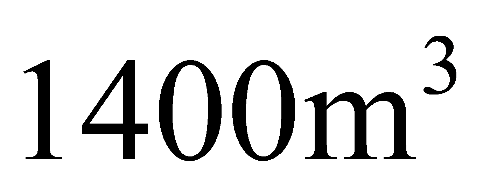
时，得到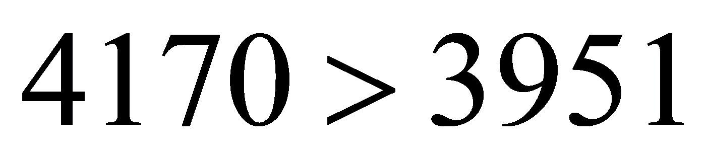
，由此得到乙户在第二阶梯，根据其收费方式计算即可求解．【详解】（1）解：∵
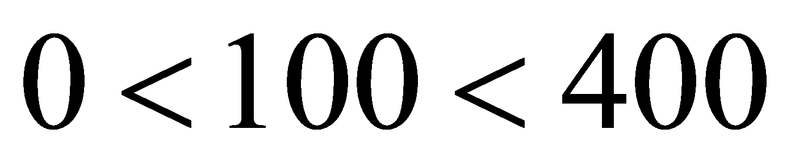
，∴按第一阶梯收费，需缴纳燃气费用为
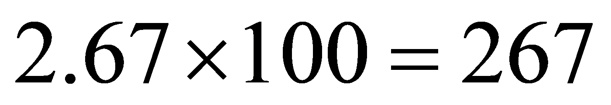
（元），∵
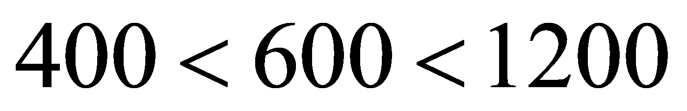
，∴按第二阶梯收费，需缴纳燃气费用为
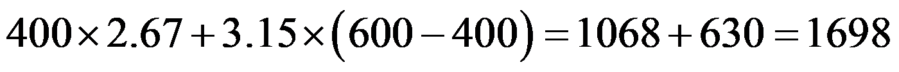
（元），故答案为：
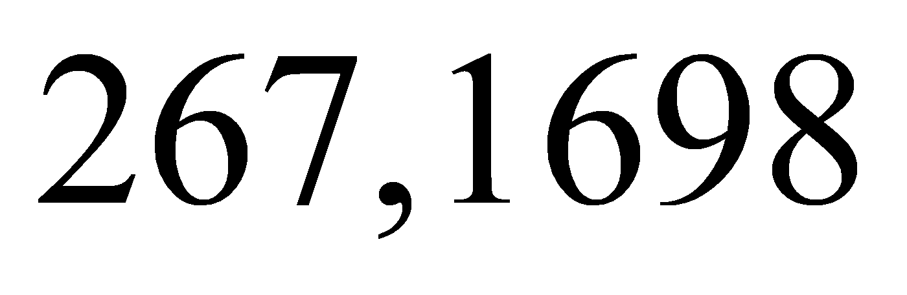
（2）解：一户不超过4人的家庭，年用气量x超过了，设该年此户需缴纳燃气费用为y元，
∴按照第三阶梯收费，
∴
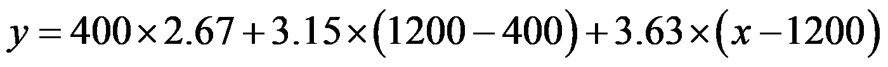
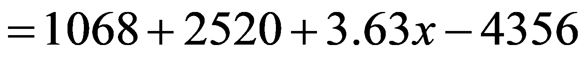
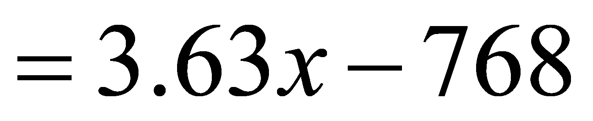
，∴该年此户需缴纳燃气费用为
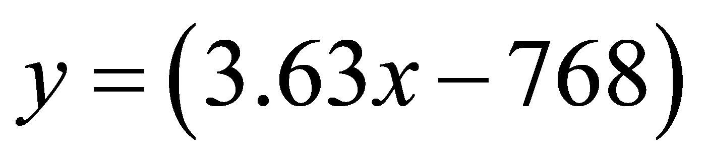
元；（3）解：甲户家庭人口为3人，
∴收费方式将按照表格提供的阶段收费方法计算，
当甲户用气量为时，
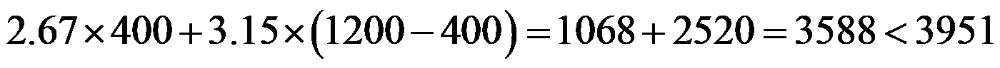
，∴甲户用气量达到第三阶梯，
∴结合（2）得，
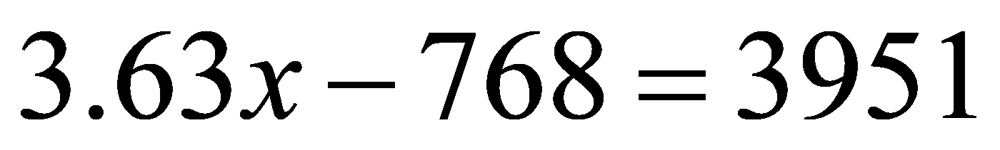
，解得，
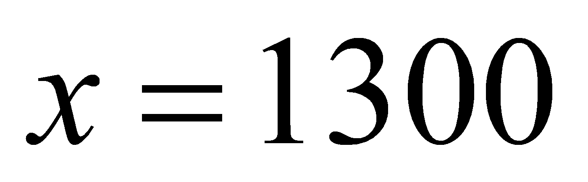
，∴甲户该年的用气量达到了第三阶梯，用气量为，
乙户家庭人口为5人，
∴收费方式为：超过四人，每增加一人，第一、二阶梯年用气量的上限分别增加 、，
、，
∴该户第一阶梯为：
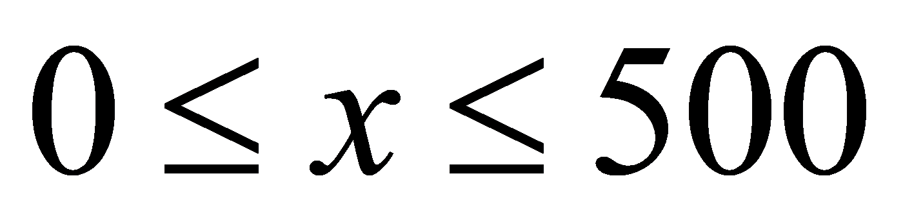
， 元
元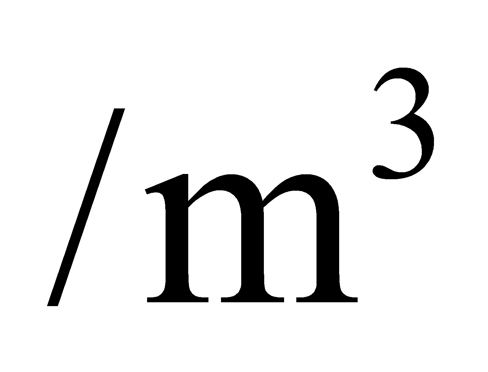
，第二阶梯为：
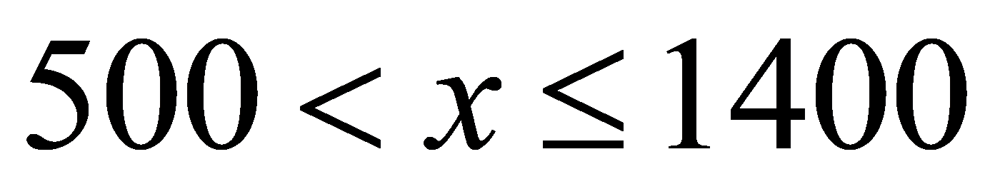
，元，第三阶梯为：以上的部分，元，
∴当乙户用气量达到时，，
∴乙户用气量达到第二阶梯，
∴设乙户用气量为，
∴，
解得，，
∴乙户该年的用气量达到第二阶梯，用气量为．
10．某地天然气收费方案如下：
阶梯 | 年用气量 | 价格 | 补充说明 |
第一阶梯 | （含400）的部分 | 3元/ | 当家庭人口超过3人时，每增加1人，第一、二阶梯年用气量的上限将分别增加 |
第二阶梯 | （含800）的部分 | 4元/ | |
第三阶梯 |
| 5元/ |
 ，
， ，同时，第二、三阶梯年用气量的下限随着调整，每一阶梯的价格保持不变
，同时，第二、三阶梯年用气量的下限随着调整，每一阶梯的价格保持不变 以上的部分
以上的部分(1)某家庭当年用气量为 ．若该家庭人口为3人，则需缴纳燃气费用_______元；若该家庭人口为4人，则需缴纳燃气费用_______元．
．若该家庭人口为3人，则需缴纳燃气费用_______元；若该家庭人口为4人，则需缴纳燃气费用_______元．
(2)甲户家庭人口为3人，乙户家庭人口为4人，某年甲、乙两户年用气量之和为  ，甲户年用气量大于乙户年用气量．设甲用户年用气量为
，甲户年用气量大于乙户年用气量．设甲用户年用气量为  ，请用 x 分别表示甲、乙两户需缴纳的燃气费．
，请用 x 分别表示甲、乙两户需缴纳的燃气费．
(3)某公司共有22名员工，员工宿舍有3人间和4人间两种类型的房间可供选择，且员工所选择的房间必须住满．结算天然气费用时，将每间宿舍视作一户家庭，按上表的收费标准进行收费．假定每名员工的年用气量为 ，要使该公司员工宿舍当年缴纳总天然气费用最低，则3人间的房间数为多少？
，要使该公司员工宿舍当年缴纳总天然气费用最低，则3人间的房间数为多少？
【答案】(1)，
(2)当时，甲、乙两户年用气量分别是元，元，当时，甲、乙两户年用气量分别是元，元．
(3)3人间的房间数为
【分析】本题考查一元一次方程的应用．理解阶梯收费的计算方法是解决本题的关键．
（1）若该家庭人口为3人，需要缴纳费用为：超过400立方米的立方数；若该家庭人口为4人，需要缴纳费用为：；
（2）设甲户年用气量为，则乙户年用气量为(，根据甲户年用气量大于乙户年用气量可得甲户年用气量超过，那么乙户年用气量不足，分两种情况进而列出代数式即可；
（3）设3人间有 间，则4人间有间．根据为正整数，可得可能的整数值，那么可得3人间房间数和4人间房间数，根据用气标准得到3人间的年用气量和4人间的年用气量，进而判断出不同情况下的付费情况，比较后可得费用最低的宿舍分配方案．
间，则4人间有间．根据为正整数，可得可能的整数值，那么可得3人间房间数和4人间房间数，根据用气标准得到3人间的年用气量和4人间的年用气量，进而判断出不同情况下的付费情况，比较后可得费用最低的宿舍分配方案．
【详解】（1）解：∵某家庭当年用气量为．该家庭人口为3人，
∴需缴纳燃气费用：(元)．
∵某家庭当年用气量为．该家庭人口为4人，
∴需缴纳燃气费用：(元)．
（2）解：设甲用户的用气量为，则乙用户的用气量为．
∵甲户年用气量大于乙户年用气量，
，
解得： ．
．
，
当时，
∴甲户年用气量为：元，
乙用户的用气量为：元，
当时，
∴甲户年用气量为：元，
乙用户的用气量为：元，
答：当时，甲、乙两户年用气量分别是元，元，当时，甲、乙两户年用气量分别是元，元．
（3）解：设3人间有间，则4人间有间．
∵为正整数，
∴ 或
或 ．
．
∴ 人间有4间或1间．
人间有4间或1间．
一个3人间用气量为：，
一个4人间用气量为：．
①3人间2间，4人间4间．
需缴纳燃气费用：(元)．
②3人间6间，4人间1间．
需缴纳燃气费用：(元)．
，
∴要使该公司员工宿舍当年总天然气费最低，则3人间的房间数为6间．
11．为鼓励市民节约用水，某地推行阶梯式水价计费制，标准如下：每户居民每月用水不超过10立方米的按每立方米元计费；超过10立方米的部分按每立方米 元计费．
元计费．
(1)若每月用水量16立方米，需交水费__________元．
(2)若某户居民在某个月份用水立方米，思考并回答：
当不超过10立方米，需交水费__________元；当超过10立方米，需交水费__________元（用含有的式子表示）．
(3)小颖家11月份共交水费33元，请问她家11月共用水多少立方米．
【答案】(1)47
(2)，
(3)12
【分析】本题考查了根据题意列代数式，一元一次方程的应用等知识．
（1）根据题意列式计算即可求解；
（2）根据题意列式，并化简即可求解；
（3）根据题意列方程，解方程即可求解．
【详解】（1）解：若每月用水量16立方米，需交水费（元）．
故答案为：47；
（2）解：当不超过10立方米，需交水费元；当超过10立方米，需交水费元．
故答案为：，；
（3）解：∵，
∴由题意得，
解得 ．
．
答：小颖家11月份共用水12立方米．
12．某市为鼓励市民节约用水，增强节水意识，决定对居民用水实行“阶梯收费”办法．规定：每户每月不超过月用水标准部分的水价为2.5元/吨，超过月用水标准部分的水价为3.5元/吨．该市小明家5月用水量为12吨，交水费32元．
(1)请判断小明家5月用水是否超过标准用水量．
(2)该市规定的每户月用水标准量是多少吨？
【答案】(1)超过
(2)10吨
【分析】此题考查了列一元一次方程解应用题，解题的关键是审题，找到题目中的数量关系．
（1）计算出若用水量未超过标准时的水费为元，实际水费32元大于30元，因此用水量超过标准．
（2）设月用水标准量为吨，根据阶梯收费规则，列方程求解．
【详解】（1）解：∵若用水量未超过标准，则水费为（元），
而实际水费为32元，，
∴小明家5月用水超过标准用水量．
答：超过．
（2）解：设该市规定的每户月用水标准量是吨．
由（1）知用水超过标准，
∴用水12吨中，标准部分为吨，超过部分为吨．
根据题意，水费为．
解得： ．
．
答：该市规定的每户月用水标准量是10吨．
13．为鼓励居民节约用电，某市对居民用电实行“阶梯电价”，按年度用电量分三个档次计费．小明家2025年前8个月的用电量共计2000千瓦时，根据缴费记录，这8个月共缴纳电费1060元．已知该市第一档电价为0.5元/千瓦时，第二档电价超出部分每千瓦时比第一档提价0.05元．请问小明家8月份的用电量是否超过了第一档的年度基础电量？请通过计算说明．（注：为简化计算，本题假设每月用电量平均，且只考虑前两档电价）
【答案】小明家8月份的用电量超过了第一档的年度基础量
【分析】本题考查了分段计费问题，解题关键是通过“假设全按第一档计费的电费与实际电费对比”判断是否超档，并利用分段电价的数量关系列方程计算．
假设全部用电量按第一档电价计费，计算理论电费；对比理论电费与实际电费，判断是否超档；结合第二档电价，通过方程验证并确定超档事实．
【详解】解：假设未超过第一档，即2000千瓦时全部按第一档电价（0.5元/千瓦时）计费，
电费为：元，
∵实际缴纳电费为1060元，
，
∴用电量超过了第一档基础电量．
第二档电价为：元/千瓦时．
设第一档基础电量为x，超过部分为，则电费为：
即第一档基础电量为800千瓦时，而小明家8个月用了2000千瓦时，远超过第一档基础电量．
∴小明家8月份的用电量超过了第一档的年度基础量．
14．某市居民用气阶梯气价标准如下：
阶梯 | 年度用气量 （单位：立方米） | 价格 （单位：元/立方米） |
第一阶梯 | 大于0小于等于 | a |
第二阶梯 | 大于 |
|
第三阶梯 |
|
|
 的部分
的部分

(1)小依家年度用气 立方米，应缴纳气费______元(用含a的式子表示)；已知该年度缴纳气费元，则
立方米，应缴纳气费______元(用含a的式子表示)；已知该年度缴纳气费元，则 ______
______
(2)在（1）的结论下，该市某天然气公司推出了“居民家庭采暖用气”政策，居民用户在申请执行该政策后，全年用气量划分为两个阶段．每年1月、2月以及 月共三个月为采暖期，无论用气量为多少，均按第一阶梯气价计费，其余的9个月为非采暖期，用气总量按普通阶梯气价计费．小钟家成功申请了“居民家庭采暖用气”，今年的年用气总量为
月共三个月为采暖期，无论用气量为多少，均按第一阶梯气价计费，其余的9个月为非采暖期，用气总量按普通阶梯气价计费．小钟家成功申请了“居民家庭采暖用气”，今年的年用气总量为 立方米，共缴纳气费
立方米，共缴纳气费 元．已知非采暖期用气量不低于
元．已知非采暖期用气量不低于 立方米，求小钟家今年采暖期用气费用．
立方米，求小钟家今年采暖期用气费用．
【答案】(1)，
(2)
【分析】本题考查了列代数式，阶梯计价问题(一元一次方程的应用)等知识，解题关键是掌握上述知识点并能运用求解．
（1）利用应缴纳气费超出立方米的部分，可用含a的代数式表示出应缴纳气费，结合该年度缴纳气费元，可列出关于a的一元一次方程，解之即可得出结论；
（2）设小钟家今年非采暖期用气量为x立方米，则小钟家今年采暖期用气量为立方米，分及两种情况考虑，根据小钟家今年共缴纳气费元，可列出关于x的一元一次方程，解之可得出x的值，再将其符合题意的值代入中，即可求出结论．
【详解】（1）解：当小依家年度用气立方米时，应缴纳气费元，
根据题意得：，
解得：．
故答案为：，；
（2）设小钟家今年非采暖期用气量为x立方米，则小钟家今年采暖期用气量为立方米，
当时，，
解得：，
∴（元）；
当时，，
解得：（不符合题意，舍去）．
答：小钟家今年采暖期用气费用为元．
15．为鼓励居民节约用电，某市电力公司采用分段计费方式计算电费：每月用电不超过180度时，按每度 元计费：每月用电超过180度但不超过280度时，其中的180度仍按原标准收费，超过部分按每度元计费．收费标准如表：
元计费：每月用电超过180度但不超过280度时，其中的180度仍按原标准收费，超过部分按每度元计费．收费标准如表：
用电量 | 不超过180度 | 超过180度但不超过280度的部分 | 超过280度的部分 |
收费标准（元/度） |
|
|

(1)若小明家9月用电量为160度，则他们家9月的电费是 元；
若小明家10月用电量为230度，则他们家10月的电费是 元．
(2)若小明家11月用电量为 度；请用含的代数式表示他们家11月应缴的电费；
度；请用含的代数式表示他们家11月应缴的电费；
(3)若小明家12月缴的电费166元，则该月小明家用电量是多少？
【答案】(1)80，120；
(2)当 时，电费是元；当时，电费是
时，电费是元；当时，电费是 元；
元；
(3)12月用电量为度．
【分析】本题考查了列代数式，一元一次方程的应用．
（1）根据表格计算即可；
（2）分情况作答即可；
（3）求出12月电费所在位置，进而列方程计算即可．
【详解】（1）解：（元）
∴9月的电费是80元；
（元）
∴10月的电费是120元；
故答案为：80，120；
（2）解：依题意，当时，电费是元；
当时，电费是 元；
元；
（3）解：由（1）知12用电量大于230度，
当 ，
，  ；
；
可知12用电量在第三档，
设12月用电量为 度，
度，
则 ，
，
解得：，
即12月用电量为度．
16．为了加强公民的节水意识，合理利用水资源，某市采用价格调控的手段以达到节水的目的，该市自来水收费的价目表如下（消费按月份结算）：
价目表 | |
每月用水量 | 价格 |
不超过 | 3元/ |
超出 | 5元/ |
超出 | 7元/ |

(1)某户居民1月份和2月份的用水量分别为和 ，则应收水费分别是 元和 元．
，则应收水费分别是 元和 元．
(2)若该户居民3月份用水量为 （其中），则应收水费多少元（用含a的式子表示，并化简）？
（其中），则应收水费多少元（用含a的式子表示，并化简）？
(3)若该户居民4月份交水费 元，该户居民4月份用水多少立方米？
元，该户居民4月份用水多少立方米？
【答案】(1)12，25；
(2)应收水费元
(3)该户居民4月用水
【分析】本题考查列代数式，整式的加减的应用，一元一次方程的应用，根据题意分类讨论是解题的关键．
（1） 月份用水，则按第一档缴费；月份用水，则按第二档缴费；
月份用水，则按第一档缴费；月份用水，则按第二档缴费；
（2）由于月份用水量 (其中)，根据缴费的形式得到化简即可；
(其中)，根据缴费的形式得到化简即可；
（3）设月份用水，根据题意可得，列出一元一次方程，解方程即可求解．
【详解】（1）解：1月份用水，不超过 ，水费为
，水费为 （元）；
（元）；
2月份用水，超过不超出 ，水费为（元）；
，水费为（元）；
故答案为：12，25；
（2）解：∵，
∴应收水费为元．
答：应收水费元；
（3）解：设4月份用水，
当 时，水费为（元）；
时，水费为（元）；
当时，水费为（元）；
∵，
∴．
则水费为．
∴，
，
，
．
答：该户居民4月用水．
考点03 配套问题
17．某纺织厂生产床品四件套（1个床单，1个被套，2个枕套），现计划安排15名工人缝制枕套和被套，已知每人每天可缝制200个枕套或50个被套．
(1)为使每天缝制的枕套和被套刚好配套，则每天缝制的被套有多少个？
(2)若每个枕套和每个被套均需1个拉链，现有600个枕套，300个被套，300个床单以及885个拉链，则最终能组成多少套四件套？
【答案】(1)每天缝制的被套有个
(2)最终能组成套四件套
【分析】（1）先设缝制被套的工人数为未知数，根据工人 数和枕套、被套的配套关系列方程求解被套数 量；
（2）每个枕套和每个被套均需1个拉链，故一套四件套（个床单，个被套，个枕套）需要三个拉链，设有套四件套，则需要个拉链，列不等式组即可求解．
【详解】（1）解：设每天安排名工人缝制被套，则安排名工人缝制枕套．
根据题意，得，解得，
（个）．
故每天缝制的被套有个．
（2）解：设最终能组成套四件套，根据题意，组成套四件套需要枕套 个，被套个，床单个，拉链个.则有：
个，被套个，床单个，拉链个.则有：
2x≤600x≤300x≤3003x≤885，
解得.故最终能组成套四件套．
【点睛】本题考查了一元一次方程的应用，配套问题，认真审题，找准等量关系是解题的关键．
18．在北京冬奥会中，志愿者们手上、脖子上的丝巾非常美丽．车间70名工人承接了制作丝巾的任务，已知每人每天平均生产手上的丝巾1800条或者脖子的丝巾1200条，一条脖子上的丝巾要配两条手上的丝巾．为了使每天生产的丝巾刚好配套，应分配多少名工人生产脖子上的丝巾，多少名工人生产手上的丝巾？
【答案】分配30名工人生产脖子上的丝巾，40名工人生产手上的丝巾
【分析】本题考查了一元一次方程的应用，解题关键是要读懂题目的意思，根据题目给出的条件，找出合适的等量关系列出方程，再求解．
设应分配x名工人生产脖子上的丝巾，则根据一条脖子上的丝巾要配两条手上的丝巾作为等量关系可列出方程求解．
【详解】解：设应分配名工人生产脖子上的丝巾，
则：
解得：
答：应分配30名工人生产脖子上的丝巾，40名工人生产手上的丝巾．
19．某车间为提高生产总量，在原有14名工人的基础上，新调入若干名工人．使得调整后车间的总人数比新调入工人人数的2倍多6人．
(1)求新调入多少名工人？
(2)若该车间每名工人每天可以生产240个螺栓或400个螺母，若1个螺栓需要2个螺母．在新调入工人后，应该安排多少名工人生产螺栓，才能使每天生产的螺栓和螺母刚好配套？
【答案】(1)新调入8名工人
(2)应该安排10名工人生产螺栓，才能使每天生产的螺栓和螺母刚好配套
【分析】本题主要考查了一元一次方程的应用，读懂题意，准确列出方程是解题的关键．
（1）设调入x名工人，根据“调整后车间的总人数是调入工人人数的2倍多6人”列方程，解方程即可得到答案；
（2）先求出工人总人数，设y名工人生产螺栓，则 名工人生产螺母，再根据“每名工人每天可以生产240个螺栓或400个螺母，1个螺栓需要2个螺母”列方程，解方程即可．
名工人生产螺母，再根据“每名工人每天可以生产240个螺栓或400个螺母，1个螺栓需要2个螺母”列方程，解方程即可．
【详解】（1）解：设调入x名工人，由题意可得：
，
解得，
答：新调入8名工人；
（2）解：由（1）得工人总人数为（名），
设y名工人生产螺栓，则名工人生产螺母，
由题意可得， ，
，
解得： ，
，
答：应该安排10名工人生产螺栓，才能使每天生产的螺栓和螺母刚好配套．
20．中国瓷器对世界文明的影响丝毫不亚于中国的四大发明，那些制作精美的瓷器更是成了西方人眼中的“神器”，以至于他们就用瓷器（ ）来称呼中国，某瓷器厂共有90名工人，每名工人一天能做200只茶杯或50只茶壶，如果8只茶杯和1只茶壶为一套茶具．
）来称呼中国，某瓷器厂共有90名工人，每名工人一天能做200只茶杯或50只茶壶，如果8只茶杯和1只茶壶为一套茶具．
(1)应安排多少人生产茶杯，可以使每天生产的茶具刚好配套？
(2)按（1）中的安排，每天可以生产多少套茶具？
【答案】(1)应安排60人生产茶杯，可以使每天生产的茶具刚好配套
(2)每天可以生产1500套茶具
【分析】本题考查了一元一次方程的实际应用；找到等量关系列出方程是解题的关键．
（1）设安排人生产茶杯，则人生产茶壶，根据“每名工人一天能做200只茶杯或50只茶壶，8只茶杯和1只茶壶为一套”列方程求解即可；
（2）求出按（1）中的安排生产的茶壶数量即可得到答案．
【详解】（1）解：设安排人生产茶杯，则人生产茶壶．
根据题意，得，
解得 ,
,
答：应安排60人生产茶杯，可以使每天生产的茶具刚好配套．
（2）由（1）知：（套）
答：每天可以生产1500套茶具．
21．某校七年级四班共有学生 人，其中男生比女生人数的
人，其中男生比女生人数的 多
多 人．劳技课上，老师组织同学们自己动手制作便携式收纳盒，要求每名学生做盒身个或盒底
人．劳技课上，老师组织同学们自己动手制作便携式收纳盒，要求每名学生做盒身个或盒底 个．
个．
(1)七年级四班男生和女生各多少人？
(2)原计划男生做盒身，女生做盒底，每个盒身匹配个盒底，那么同学们做出的盒身与盒底不能完全配套，老师决定调一部分男生去支援女生，使制作的盒身与盒底刚好配套．调去支援的男生有多少人？
【答案】(1)七年级四班有男生24人，女生21人
(2)需要6名男生去支援女生，才能使这节课制作的盒身和盒底刚好配套
【分析】本题主要考查了一元一次方程的应用，解题的关键是根据等量关系，列出方程．
（1）设女生人数为x人，则男生人数为人，根据七年级四班共有学生45人列出关于x的一元一次方程，求解即可得出答案．
（2）设a名男生去支援女生，根据每个盒身匹配2个盒底为等量关系，列出关于a的一元一次方程求解即可得出答案．
【详解】（1）解：设女生人数为x人，则男生人数为人，
根据题意可得：，
解得： ，
，
则，
答：七年级四班有男生24人，女生21人．
（2）解：设a名男生去支援女生，才能使这节课制作的盒身和盒底刚好配套，
根据题意得：，
整理得：，
解得：，
答：需要6名男生去支援女生，才能使这节课制作的盒身和盒底刚好配套．
22．某家具生产车间有30名工人生产家用餐桌和椅子，1张桌子和4把椅子配成一套．已知一名工人一天可以生产2张桌子或7把椅子．
(1)分别安排多少名工人生产桌子和椅子可使一天生产的桌椅正好配套？
(2)去年一套桌椅成本为200元，今年一套餐桌的成本比去年提高了25%，今年的总投入比去年多1万元，结果生产的餐桌比去年少50套，则去年总投入多少万元？
【答案】(1)安排14名工人生产桌子，16名工人生产椅子可使一天生产的桌椅正好配套
(2)去年的总投入为9万元
【分析】本题考查了一元一次方程的实际应用知识点，解题的关键是根据题目中的等量关系准确列出方程并求解．
（1）设安排名工人生产桌子，则安排名工人生产椅子，根据题目中的等量关系可列方程，求解即可得．
（2）设去年总投入元，则今年总投入元．去年一套桌椅成本为 200 元，今年一套餐桌的成本比去年提高了 ，则今年一套桌椅成本为元，根据生产的餐桌比去年少 50 套这一关系，可列方程，求解即可得．
，则今年一套桌椅成本为元，根据生产的餐桌比去年少 50 套这一关系，可列方程，求解即可得．
【详解】（1）设安排名工人生产桌子，则安排 名工人生产椅子．
名工人生产椅子．
由题意得：，
解得： ，
，
．
答：安排14名工人生产桌子，16名工人生产椅子可使一天生产的桌椅正好配套．
（2）设去年总投入元，则今年总投入元，
根据题意得：，
解得：．
答：去年的总投入为9万元．
23．巢湖某工厂主要生产各种样式的包装盒，现收到一批糖果盒的订单，主管要安排工人即刻生产．已知该工厂共有84名工人，其中女工人数比男工人数的3倍少36人，并且每个工人平均每小时可以制作盒身50个或盒底110个．
(1)该工厂有男工、女工各多少人？
(2)该工厂原计划男工负责制作盒身，女工负责制作盒底，要求一个盒身配两个盒底，那么调多少名女工帮男工制作盒身时，才能使每小时制作的盒身与盒底恰好配套？
【答案】(1)该工厂有男工30人，有女工54人
(2)调14名女工帮男工制作盒身，才能使每小时制作的盒身与盒底恰好配套．
【分析】此题主要考查了一元一次方程的应用，关键是正确理解题意，找出题目中的等量关系，列出方程．
（1）设该工厂有男工人，则女工有人，根据“男工人数 女工人数”列出方程并解答；
女工人数”列出方程并解答；
（2）首先设设调名女工帮男工制作盒身，根据题意可得等量关系：盒身数量盒底数量，根据等量关系列出方程，再解即可．
【详解】（1）解：设该工厂有男工人，则女工有人，
由题意得：，
解得：，
女工：（人），
答：该工厂有男工30人，有女工54人；
（2）解：设调名女工帮男工制作盒身，
由题意得：，
解得： ，
，
答：调14名女工帮男工制作盒身，才能使每小时制作的盒身与盒底恰好配套．
24．某校新进了一批课桌椅，七年级（2）班的学生利用活动课时间帮助学校搬运部分课桌椅，已知七年级（2）班共有学生45人，其中男生人数比女生人数的2倍少24人，要求每个学生搬运6张桌子或者搬运15把椅子．请解答下列问题：
(1)七年级（2）班男生、女生分别有多少人？
(2)一张桌子配两把椅子，为了使搬运的桌子和椅子刚好配套，应该分配多少个学生搬运桌子，多少个学生搬运椅子？
【答案】(1)七年（2）班有男生22人、女生23人
(2)应该分配25名学生搬运桌子，20名学生搬运椅子
【分析】本题考查的是一元一次方程的应用，确定相等关系是解本题的关键；
（1）设女生有人，根据男生人数比女生人数的2倍少24人得到男生人数，再利用总人数建立方程求解即可；
（2）设分配名学生搬运桌子，可得人搬运椅子，利用搬运的桌子和椅子刚好配套，再建立方程求解即可．
【详解】（1）解：设女生有人，
由题意得：，
解得 ，
，
（人），
答：七年（2）班有男生22人、女生23人；
（2）解：设分配名学生搬运桌子，
由题意得：，
解得，
（名），
答：应该分配25名学生搬运桌子，20名学生搬运椅子．
考点04 新能源相关问题
25．用一元一次方程解答下列问题．
当前，重庆正加速打造智能网联新能源汽车之都，同时重庆也是全国三个机动车保有量超过万辆的城市之一，消费潜力巨大．某 汽车销售店顺应浪潮，月份主推了
汽车销售店顺应浪潮，月份主推了 款燃油车和
款燃油车和 款新能源汽车，已知该店销售辆款燃油车和辆款新能源汽车的总销售额为
款新能源汽车，已知该店销售辆款燃油车和辆款新能源汽车的总销售额为 万元，销售辆款燃油车、辆款新能源汽车的总销售额为
万元，销售辆款燃油车、辆款新能源汽车的总销售额为 万元．
万元．
(1)求月份每辆款、款汽车售价分别为多少万元？
(2)因为每种车型销售热度不一，所以源头厂家一直保持严格的配货制度，即该店每引进辆款新能源汽车则必须引进辆款燃油车．该店月份引进的款燃油车和款新能源汽车全部销售一空，其中引进了款新能源汽车辆．月份由于新能源汽车电池成本大幅提高，与月份相比，每辆款新能源汽车售价提高了，同时为了响应国家的号召，对款新能源汽车每辆进行万元的现金补贴，每辆款燃油车的售价则保持不变，最终月份的款燃油车销量相比月份款燃油车的销量降低了 ，款新能源汽车销量相比月份款新能源汽车销量提高了
，款新能源汽车销量相比月份款新能源汽车销量提高了 ，月份两款车的总销售额比月份两款车的总销售额提高了，求的值．
，月份两款车的总销售额比月份两款车的总销售额提高了，求的值．
【答案】(1)月份每辆款汽车售价为 万元，款汽车售价为
万元，款汽车售价为 万元
万元
(2)
【分析】本题考查一元一次方程的应用，正确理解题意，根据数量关系列出一元一次方程是解题的关键．
（1）设月份每辆款汽车售价为万元，则款汽车售价为万元，根据“销售辆款燃油车、辆款新能源汽车的总销售额为万元”列出关于的一元一次方程，求解即可；
（2）先根据月份的配货制度求出月份款车的销量，再分别表示出月份、两款车的售价和销量，根据月份总销售额比月份提高列出关于的一元一次方程，求解即可．
【详解】（1）解：设月份每辆款汽车售价为万元，则款汽车售价为万元，
依题意，得：，
解得：，
∴（万元），
∴月份每辆款汽车售价为 万元，款汽车售价为万元；
万元，款汽车售价为万元；
（2）月份引进款燃油车的数量为：（辆），
月份每辆款新能源汽车售价为万元，实际售价为万元，
月份每辆款燃油车售价仍为 万元，
万元，
月份款燃油车销量为辆，
月份款新能源汽车销量为（辆），
月份两款车的总销售额为（万元），
月份两款车的总销售额为万元，
依题意，得：
解得：，
∴的值为．
26．某汽车企业第一季度销售x万辆新能源汽车，第二季度销售的新能源汽车比第一季度的 倍少1万辆，第三季度销售的新能源汽车比第一季度的2倍多6万辆．
倍少1万辆，第三季度销售的新能源汽车比第一季度的2倍多6万辆．
(1)求该汽车企业前三季度一共销售的新能源汽车的数量（用含有x的代数式表示）；
(2)如果该汽车企业第三季度比第二季度多销售 万辆新能源汽车，求该企业前三季度销售的新能源汽车数量．
万辆新能源汽车，求该企业前三季度销售的新能源汽车数量．
【答案】(1)万辆
(2)万辆
【分析】本题考查了列代数式、一元一次方程的应用，理解题意，正确列出代数式是解题的关键．
（1）根据题意得出第二、第三季度销售的新能源汽车数量，再将前三季度的数量相加即可；
（2）根据第三季度比第二季度多销售万辆新能源汽车，列出方程求出的值，再代入（1）中的代数式即可解答．
【详解】（1）解：由题意得，第二季度销售的新能源汽车数量为万辆，第三季度销售的新能源汽车数量为万辆，
 前三季度一共销售的新能源汽车的数量为万辆．
前三季度一共销售的新能源汽车的数量为万辆．
答：该汽车企业前三季度一共销售的新能源汽车的数量为万辆．
（2）解：由题意得，，
解得：，
代入，则，
答：该企业前三季度销售的新能源汽车数量为万辆．
27．列方程解应用题
小华一家驾驶某款新能源汽车外出游玩，去时选择普通公路，返回时选择高速公路．走普通公路比高速公路的路程多60公里，这款新能源汽车在普通公路上行驶平均每百公里耗电20度，在高速公路上行驶比普通公路上行驶平均每百公里耗电增加 ，该车选择的充电站充电综合电费均为
，该车选择的充电站充电综合电费均为 元/度．最终发现走普通公路的电费比高速公路的电费少15元，求返回时所走高速公路的路程．
元/度．最终发现走普通公路的电费比高速公路的电费少15元，求返回时所走高速公路的路程．
【答案】所走高速公路的路程为550公里
【分析】题目主要考查一元一次方程的应用，理解题意，列出方程是解题关键
设所走高速公路的路程为x公里，则普通公路的路程为公里，根据题意列出方程求解即可，注意单位换算．
【详解】解：设所走高速公路的路程为x公里，则普通公路的路程为公里，
根据题意得：，
解得，
∴所走高速公路的路程为550公里．
28．列方程解应用题
重庆赛力斯公司生产的问界M7和问界M9两款新能源汽车深受消费者的欢迎，该公司生产汽车零部件的甲车间有工人50名，乙车间有工人60名，因接到加急生产一批新能源汽车的任务，所以该公司新增40名工人分配到甲、乙两个车间，分配后甲车间的总人数比分配后乙车间的总人数多10人．求新分配到甲车间、乙车间的人数各有多少人？
【答案】新分配到甲车间的有30人，新分配到乙车间的有10人
【分析】本题考查了一元一次方程的应用，解题的关键是，根据各数量之间的等量关系，正确列出一元一次方程．
根据“该公司新增40名工人分配到甲、乙两个车间，分配后甲车间的总人数比分配后乙车间的总人数多10人”，可列出关于一元一次方程，解之即可得出结论．
【详解】解：设新分配到甲车间的人数是人，则新分配到乙车间的人数是人，
根据题意得，
∴，
，
答：新分配到甲车间的有30人，新分配到乙车间的有10人．
29．为了解新能源汽车的能耗情况，某测评公司推出了“真实路况能耗挑战”测试．测试路线由市区道路和高速道路两部分组成．如果挑战结束后车辆的百公里平均能耗不高于 ，则视为挑战成功．一款新能源汽车在测试路线的市区道路中百公里平均能耗为，在高速道路中百公里平均能耗为，此次测试的总能耗为
，则视为挑战成功．一款新能源汽车在测试路线的市区道路中百公里平均能耗为，在高速道路中百公里平均能耗为，此次测试的总能耗为 ．若本次测试道路中市区道路的长度是高速道路长度的4倍，请通过计算判断该车是否能挑战成功．
．若本次测试道路中市区道路的长度是高速道路长度的4倍，请通过计算判断该车是否能挑战成功．
【答案】该车能挑战成功，理由见解析
【分析】本题主要考查了一元一次方程的应用．设本次测试道路高速道路长度为百公里，市区道路长度为 百公里，根据题意，列出方程，可得本次测试的总道路长度为2百公里，即可求解．
百公里，根据题意，列出方程，可得本次测试的总道路长度为2百公里，即可求解．
【详解】解：设本次测试道路高速道路长度为百公里，市区道路长度为百公里．
依题意，得．
解得．
．
即本次测试的总道路长度为2百公里．
 本次测试的总能耗为．
本次测试的总能耗为．
本次测试的百公里平均能耗为．
本次测试的百公里平均能耗不高于．
该车能挑战成功．
30．某汽车品牌4s店2月售出了A型燃油车15辆和型新能源汽车22辆，其中A型燃油车的售价是型新能源汽车售价的 ，4s店2月的销售额为534万元．
，4s店2月的销售额为534万元．
(1)求每辆A型燃油车和每辆型新能源汽车的售价分别为多少万元；
(2)4s店3月向汽车厂商订购A型燃油车和型新能源汽车共40辆，已知A型燃油车的订单价为12万元，型新能源汽车的订购单价为10万元，4s店订购40辆汽车共花费432万元．若每辆A型燃油车的售价在2月基础上降价 万元，每辆型新能源汽车的售价在2月基础上打95折，4s店售完这40辆汽车的利润率为
万元，每辆型新能源汽车的售价在2月基础上打95折，4s店售完这40辆汽车的利润率为 ．求
．求 的值．
的值．
【答案】(1)每辆A型燃油车的售价为 万元，每辆型新能源汽车的售价为万元
万元，每辆型新能源汽车的售价为万元
(2)
【分析】本题考查了一元一次方程的应用，读懂题意找到等量关系式是解题的关键．
（1）设每辆型新能源汽车的售价为万元，则每辆A型燃油车的售价为万元，根据“4s店2月的销售额为534万元”列方程求解即可得出答案；
（2）设3月订购A型燃油车辆，则型新能源汽车为辆，根据总花费列方程求出A型燃油车辆，型新能源汽车辆，再根据利润列方程求解即可得出答案．
【详解】（1）解：设每辆型新能源汽车的售价为万元，则每辆A型燃油车的售价为元，
根据题意，得，
解得：，则，
答：每辆A型燃油车的售价为万元，每辆型新能源汽车的售价为万元；
（2）解：设3月订购A型燃油车辆，则型新能源汽车为辆，
根据总花费列方程，得，
解得：，则，
故A型燃油车辆，型新能源汽车辆，
根据利润率为得，，
解得：，
答：的值为．
31．2024年，成都全市新增注册登记新能源汽车10万辆以上，新增充电桩不低于4万个，某充电桩收费标准如下：充电时长 小时（含4小时）每小时收费3元，充电时长超过4小时，超过部分每小时收费2元．
小时（含4小时）每小时收费3元，充电时长超过4小时，超过部分每小时收费2元．
(1)若小石在该充电桩充电2.5小时，需支付费用多少元？
(2)若小石在该充电桩充电（）小时，需支付费用_____元（用含有的代数式表示）．
(3)小石每周在该充电桩充电一次，某月，小石第一周和第二周在该充电桩连续充电共10小时（第一周充电时长超过第二周），共支付充电费用27元，则小石第一周和第二周各充电多少小时？
【答案】(1)7.5元
(2)
(3)小石第一周和第二周各充电7小时和3小时
【分析】本题考查列代数式，一元一次方程的实际应用，找准等量关系，正确的列出方程是解题的关键：
（1）利用收费方式，列式计算即可；
（2）根据收费方式，列出代数式即可；
（3）设第一周充电小时，第二周充电 小时，分两种情况：第二周充电时间小于等于4小时和第二周充电时间大于4小时小于5小时，分别列出方程进行求解即可．
小时，分两种情况：第二周充电时间小于等于4小时和第二周充电时间大于4小时小于5小时，分别列出方程进行求解即可．
【详解】（1）解：（元）；
答：需支付费用元；
（2）元；
故答案为：；
（3）设第一周充电小时，第二周充电小时，
∵第一周充电时长超过第二周，
∴第一周充电时长大于5小时，第二周充电时长小于5小时，
当第二周充电时长小于等于4小时时：，
解得：，
则：；
当第二周充电时长大于4小时小于5小时时：，
此方程无解；
答：小石第一周和第二周各充电7小时和3小时．
32．2024年7月24日至12月31日，珠海市面向在我国境内转让本人名下车辆，并在珠海新购新能源车的个人消费者实行汽车更新置换促消费活动．根据新购车辆价格（以《机动车销售统一发票》上的价格为准），分三档一次性发放购车补贴∶
第一档：购车价格为7万元(含)至15万元(不含)的新能源车补贴0.9万元/辆；
第二档：购车价格为15万元(含)至25万元(不含)的新能源车补贴1.3万元/辆；
第三档：购车价格为25万(含)以上的新能源车补贴1.6万元/辆．
在此期间，小珠购买了一台B品牌新能源车，小海购买了一台T品牌新能源车，两人购车都符合政策补贴，其中小珠得到财政补贴1.3万元，又知每台T品牌新能源车售价比B品牌新能源车售价多10万元，两人购买新能源车除财政补贴外实际共付款43.1万元．
(1)B品牌和T品牌新能源车的购车价格各是多少万元？
(2)结合以上补贴政策，请你分析当购车价格为多少万元时折扣最低？（请通过计算说明）
【答案】(1)B品牌和T品牌新能源车的购车价格各是18万元/辆和28万元/辆
(2)当购车价格为7万元时折扣最低
【分析】本题考查了一元一次方程的应用，正确理解题意，找到等量关系是解题的关键．
（1）因为小珠购买一台B品牌新能源车得到1.3万元财政补贴，所以一台B品牌新能源车的购车价格属于第二档：15万元(含)至25万元(不含)，又因为每台T品牌新能源车售价比B品牌新能源车售价多10万元，所以一台T品牌新能源车的购车价格属于第三档：25万(含)以上，即购买一台T品牌新能源车可得到1.6万元补贴，设B品牌新能源车的购车价格为x万元/辆，则T品牌新能源车的购车价格为万元/辆，建立方程，求解即可；
（2）计算比较折扣即可．
【详解】（1）解： 设B品牌新能源车的购车价格为x万元/辆，则T品牌新能源车的购车价格为万元/辆，
则由题意得：
解得：
∴
答：B品牌和T品牌新能源车的购车价格各是18万元/辆和28万元/辆；
（2）解：
∴ ，所以当购车价格为7万元时折扣最低．
考点05 比例相关问题
33．某农户为消灭棉田中的害虫，需配制一种药水．已知这种药水中药液与水的质量比为 ．配制这种药水，需要多少千克的这种药液？
．配制这种药水，需要多少千克的这种药液？
【答案】10千克
【分析】此题考查了列一元一次方程解应用题，解题的关键是审题，找到题目中的数量关系．根据药液与水的质量比为，可得出药液在药水中的比例，进而计算所需药液质量．
【详解】解：药液与水的质量比为，则药液与药水的质量比为，
设需要药液质量为千克，则药水质量为千克，
由题意，，
解得．
答：需要10千克的这种药液．
34．甲、乙两人按 的投资比例开办了一家公司，约定除去各项支出外，所得利润按投资比例分成，若第一年盈利14000元，则甲、乙两人分别应得利润多少元？
的投资比例开办了一家公司，约定除去各项支出外，所得利润按投资比例分成，若第一年盈利14000元，则甲、乙两人分别应得利润多少元？
【答案】甲、乙可获得利润分别是4000元、10000元
【分析】本题考查了一元一次方程的应用，设甲、乙可获得利润分别是 元、
元、 元，根据“第一年盈利14000元”列出一元一次方程，计算即可得解，理解题意，找准等量关系，正确列出一元一次方程是解此题的关键．
元，根据“第一年盈利14000元”列出一元一次方程，计算即可得解，理解题意，找准等量关系，正确列出一元一次方程是解此题的关键．
【详解】解：设甲、乙可获得利润分别是元、元，
，
解得．
（元），（元）
答：甲、乙可获得利润分别是4000元、10000元．
35．A、B两种商品的价格比是，如果每种商品的价格上涨元，A、B两种商品的价格比变为，这两种商品的原价分别是多少？
【答案】A种商品元，B种商品 元
元
【分析】本题考查了一元一次方程的应用，掌握以上知识是解答本题的关键；
设这两种商品的原价分别是元和元，列出比例式子，即可求解．
【详解】解：设这两种商品的原价分别是元和元，
解得：，
∴元，元；
∴A种商品元，B种商品元．
36．在《国家空间科学中长期发展规划（2024-2050年）》中，明确了我国空间科学发展目标，提出我国拟突破的“极端宇宙”、“时空涟漪”、“日地全景”、“宜居行星”、“太空格物”5大科学主题．某班老师在进行相关科普时，让48名学生从这5大科学主题中各自选择一个喜欢的主题，最终选择“极端宇宙”、“时空涟漪”、“日地全景”、“宜居行星”、“太空格物”的人数比是 ，那么喜欢“宜居行星”主题的人数是多少？
，那么喜欢“宜居行星”主题的人数是多少？
【答案】喜欢“宜居行星”主题的人数是16
【分析】本题考查了一元一次方程的应用，根据喜欢5大科学主题的人数为48列方程求解即可．
【详解】解：设喜欢“太空格物”主题的人数为，则喜欢“极端宇宙”、“时空涟漪”、“日地全景”、“宜居行星”主题的人数分别为：、 、、．
、、．
由题意列方程为：

得：．
答：喜欢“宜居行星”主题的人数是16．
37．甲、乙、丙三位同学向贫困山区的希望小学捐赠图书，已知这三位同学捐赠图书册数的比是，如果他们共捐374本，那么这三位同学各捐书多少册？（本题考查了一元一次方程的应用．解题关键是要读懂题目的意思，根据题目给出的条件，找出合适的等量）．
【答案】甲捐书本，乙捐书本，丙捐书为153本．
【分析】本题考查一元一次方程的实际应用，设甲捐书  本，则乙捐书
本，则乙捐书  本，丙捐书为
本，丙捐书为 本，根据他们共捐374本，列出方程进行求解即可．
本，根据他们共捐374本，列出方程进行求解即可．
【详解】解：设甲捐书本，则乙捐书本，丙捐书为 本，
本，
∵他们共捐了374本，
∴，
解得 ，
，
∴，，，
答：甲捐书85本，乙捐书136本，丙捐书为153本．．
38．有甲乙丙三个仓库存放货物，已知甲乙两仓库存货吨数比为  ，乙丙两仓库存货吨数比为 ，若甲仓库向丙仓库运
，乙丙两仓库存货吨数比为 ，若甲仓库向丙仓库运  吨货物，则两个仓库货物吨数相同，求甲仓库原来存货吨数是多少吨？
吨货物，则两个仓库货物吨数相同，求甲仓库原来存货吨数是多少吨？
【答案】甲仓库原来存货 吨
【分析】设甲仓库原来存货吨数是 吨，则乙仓库原来的存货吨数为
吨，则乙仓库原来的存货吨数为 吨，丙仓库原来的存货吨数为吨，根据题意列出一元一次方程，解方程即可求解．
吨，丙仓库原来的存货吨数为吨，根据题意列出一元一次方程，解方程即可求解．
【详解】解：∵甲乙两仓库存货吨数比为 ，乙丙两仓库存货吨数比为 ，即甲乙丙仓库的存货吨数比为，
∴设甲仓库原来存货吨数是吨，则乙仓库原来的存货吨数为吨，丙仓库原来的存货吨数为吨，
根据题意得，
解得：，
∴甲仓库原来存货吨数是吨，
答：甲仓库原来存货 吨．
【点睛】本题考查了一元一次方程的应用，根据题意列出方程是解题的关键．
39．甲、乙、丙三位爱心人士向贫困山区的希望小学捐赠图书，已知甲、乙、丙三位爱心人士捐赠图书的册数之比是，如果他们共捐了748册图书，那么甲、乙、丙三位爱心人士各捐了多少册图书？
【答案】甲、乙、丙三位爱心人士各捐了 册，
册， 册，册图书
册，册图书
【分析】设甲爱心人士捐了册图书，根据题意，列出一元一次方程，进行求解即可．
【详解】解：设甲爱心人士捐了册图书，
∵甲、乙、丙三位爱心人士捐赠图书的册数之比是，
∴乙、丙两位爱心人士捐赠图书的册数为：，
由题意，得：，
解得：，
∴，
即：甲、乙、丙三位爱心人士各捐了册，册，册图书；
答：甲、乙、丙三位爱心人士各捐了册，册，册图书．
【点睛】本题考查一元一次方程的应用．准确的找到等量关系，列出一元一次方程，是解题的关键．
40．某公路收费站的收费标准是大客车20元，大货车10元，轿车5元，某天通过收费站的这三种车辆的数量之比是，共收费4800元，问这天通过收费站的三种车各是多少辆？
【答案】这天通过收费站的大客车120辆，大货车168辆，轿车144辆．
【分析】设这天通过收费站的大客车辆，大货车辆，轿车 辆，根据“大客车20元，大货车10元，轿车5元，共收费4800元”列出方程并解答．
辆，根据“大客车20元，大货车10元，轿车5元，共收费4800元”列出方程并解答．
【详解】解：设这天通过收费站的大客车辆，大货车辆，轿车辆，
依题意得：，
解得， 则（辆），（辆），（辆）．
答：这天通过收费站的大客车120辆，大货车168辆，轿车144辆．
【点睛】本题考查了一元一次方程的应用．解题的关键是找到题中的等量关系列出方程．
考点06 日历问题
41．下表是2024年 4月的日历表，在表中用形如下图的平行四边形框框出 4个数，请解答问题：
(1)若框出的4个数的和为74，请你通过列方程的办法，求出它们分别是哪4天？
(2)框出的4个数的和可能是 25 吗？为什么？
【答案】(1)15号，16号，21号，22号
(2)不可能，见解析
【分析】本题考查一元一次方程的实际应用，解题的关键是利用平行四边形框出4个数的关系解题．
（1）设其中的一天为x，则其他3天可分别表示为， ，，然后根据它们的和为74，求解即可；
，，然后根据它们的和为74，求解即可；
（2）由（1）得出4天之和为，即．求出y做判断即可．
【详解】（1）解：设第一行左边的数为x，则根据平行四边形框框出4个数得其他3天分别表示为，，，
根据题意得，
解得：，
所以，，，
所以这四天分别是15号，16号，21号，22号；
（2）解：不可能．理由如下：
设第一行左边的数为y，则，解得，
因为y表示天数，必须是正整数，
所以框出的4个数的和不可能是25．
42．【综合与探究】同学们，大家一定很熟悉月历吧！你们知道吗？月历中有很多奥秘，
下面就让我们一起来探索吧！
(1)如图1是2024年10月的月历，小宇用带阴影的“十”字框框中5个数．
①这5个数中，最大数与最小数的差是 ；
②小宇发现当任意移动“十”字框时，框中的5个数之和始终是5的倍数，请计算说明他的发现成立．
(2)如图2是2024年10月的月历，小宇用如图所示的“凹”字框在月历中任意框中5个数，将这5个数分别用字母， ，
， ，
， ，表示（如图3）．
，表示（如图3）．
①请任选其中一个字母，用含这个字母的代数式表示这5个数的和．
②这5个数的和能等于101吗？若能，请求出这5个数；若不能，请说明理由．
【答案】(1)① ；②见解析
；②见解析
(2)①（答案不唯一）②能；15，17，22，23，24
【分析】本题考查了一元一次方程的日历应用，列代数式，有理数的减法应用，正确掌握相关性质内容是解题的关键．
（1）①根据这5个数中，最小数是，最大数是 ，进行减法运算，即可作答；
，进行减法运算，即可作答；
②设正中心的数为x，则阴影框中其余的4个数为 ，，，．再列式，即可作答；
，，，．再列式，即可作答；
（2）①根据这5个数分别用字母a，b，c，d，e表示，所以，即可作答；
②能，依题意，列式 进行计算，即可作答．
进行计算，即可作答．
【详解】（1）①解：依题意，这5个数中，最小数是，最大数是，
∴，
故答案为：；
②解：设正中心的数为x，
则阴影框中其余的4个数为，，，．
∴．
则这5个数的和为．
∵是正整数，
∴当“十”字框任意移动时，框中的5个数之和始终是5的倍数；
（2）①解：∵用如图2所示的“凹”字框在月历中任意框中5个数，将这5个数分别用字母a，b，c，d，e表示，
∴，
∴，
∴这5个数的和为 （答案不唯一）；
（答案不唯一）；
②解：能，过程如下：
依题意，，
解得
则，
∴这5个数是15，17，22，23，24．
43．图1是2025年11月份的日历，用图2所示的“九方格”框住图1中的9个日期，将其中被阴影方格覆盖的四个日期分别记为，，，．
(1)______ （填“
（填“ ”，“
”，“ ”或“
”或“ ”）；
”）；
(2)数学思考：小乐认为（1）中猜想正确，他选用作差法来比较大小说理的过程如下，请你将其补充完整．
解：设 ，则，，
，则，， ______可得
______可得 ______；
______；
(3)当在图1的选择位置使 值为64，如若能，请框选；若不能，请说明理由．
值为64，如若能，请框选；若不能，请说明理由．
(4)当图2在图1的不同位置时，代数式的值是否为定值？若是，请求出它的值；若不是，请说明理由．
【答案】(1)=
(2)，0
(3)不能，理由见解析
(4)是定值，定值为
【分析】此题考查列代数式及整式加减的应用，一元一次方程的应用，解题的关键是理解题意，弄清楚数字的排列规律．
（1）分别用含的式子表示，，，，列出代数式，化简后比较即可得出结论；
（2）分别用含的式子表示，，，，列出代数式，化简后比较即可得出结论；
（3）分别用含的式子表示，，，，根据，列出方程求解即可；
（4）分别用含的式子表示，，，，代入到，再化简，即可解决问题．
【详解】（1）解：设，则，，，
，，
．
故答案为：=．
（2）由（1）得，，
．
故答案为：，0．
（3）由（1）得，，，，，
，
整理得：，解得．
8在月历表中第二行最后一个数，
无法框出九方格．
∴不能；
（4）由（1）得，，，，，
．
∴代数式的值是定值，它的值为．
44．如图是大家非常熟悉的日历，在日历中，横向相邻的两个数相差1，纵向相邻的两个数相差7．我们选择不同的方式框住日历中的数，所得到的规律是不一定相同的，现在用一个“十”字模型框住了5个数．
观察2025年9月的日历，回答下列问题：
(1)若设十字框中间的数为a，求框中的十字框中的5个数的和是多少？
(2)小李一家外出游玩了5天，这5天的日期之和是75，小李一家几号外出的？
(3)在该月的月历上用十字框框出5个数，能使这5个数的和为100吗？如果不能，请说明理由，如果能，请求出十字框中间的数．
【答案】(1)带阴影的十字框中的5个数的和是
(2)小李一家13号外出的
(3)这5个数的和不能为100，见解析
【分析】本题考查了一元一次方程的应用以及列代数式，掌握知识点是解题的关键．
（1）根据各数之间的关系，用含a的代数式表示出5个数之和；
（2）找准等量关系，正确列出一元一次方程；
（3）找准等量关系，正确列出一元一次方程．
【详解】（1）解：若设十字框中间的数为a，则另外4个数分别是，， ，，
，，
∴带阴影的十字框中的5个数的和是
；
答：框中的十字框中的5个数的和是．
（2）设小李一家x号外出的，则另外4天的日期分别是， ，
， ，
， ，
，
根据题意得：，
解得： ．
．
答：小李一家13号外出的；
（3）这5个数的和不能为100，理由如下：
假设这5个数的和能为100，根据题意得：，
解得：，
又∵20号这天为周六，不能作为中间数，
∴假设不成立，
即这5个数的和不能为100．
45．观察下图阴影方框内中间的数与其他四个数的关系．
(1)中间的数用y表示，左边的数是（ ），下面的数是（ ），方框中5个数的和是（ ）．
(2)当5个数的和是 时，这5个数分别是多少？在下图方格中填一填．
时，这5个数分别是多少？在下图方格中填一填．

【答案】(1)，，
(2)见解析
【分析】本题考查了数字类规律探索，列代数式，日历问题(一元一次方程的应用)等知识，解题关键是掌握上述知识点并能熟练运用求解．
（1）结合日历填写即可；
（2）根据题意列出方程求解，再求得其余四个数即可．
【详解】（1）解：中间的数用y表示，左边的数是，下面的数是，方框中5个数的和是．
故答案为：，，；
（2）设中间的数用y表示，
则，
解得：，
左边的数是 ，上面的数是，下面的数是
，上面的数是，下面的数是 ，右边的数是，
，右边的数是，
故这5个数分别是， ，，，，如图，
，，，，如图，
46．在月历中，每个字母都代表某个具体日期．

(1)在图（1）中任意框出五个数，则______，这5个数的和为______(都用含x的式子表示)；
(2)在图（1）中， 的和与x的关系是什么？通过计算说明；
的和与x的关系是什么？通过计算说明；
(3)已知图（2）是某个月的月历，如果用 框出的5个数的和为80，求中间的那个数．
框出的5个数的和为80，求中间的那个数．
【答案】(1)，
(2)
(3)中间的那个数为16
【分析】（1）根据月历的排列特征表示出，，，，
再求和即可得解；
（2）根据月历的排列特征表示出，，再求和即可得解；
（3）由题意得出一元一次方程，解方程即可．
本题考查了整式的加减的应用、一元一次方程的应用，掌握月历特点是解题的关键．
【详解】（1）解：，，，，
∴，
故答案为：，；
（2）解：  ；
；
理由： 由题意得，，
∴；
（3）解：设中间的数为x，
由（1）题意得这5个数的和为，
∴，
解得：，
答：中间的那个数为．
47．如图是2025年11月的月历表：
(1)如图1阴影部分所示，小明选取其中的7个连续数字进行研究，请探求这7个数字的总和与中间数9的关系，并说明理由；
(2)小明想探究非连续的9个数字是否也存在规律．他框出了如图2阴影部分的方框，并移动方框．若按日期的先后顺序给方框内的这9个数字依次编号，设这9个数字的和为S，第⑤个数字为 请探求S与a的关系，并说明理由；
请探求S与a的关系，并说明理由；
(3)小明经过研究发现，除中的方案外，仍可以在上面月历中选取非连续的9个数字，使结论与中的一样，请你把选取的9个数字用铅笔上色．
【答案】(1)这7个数字的总和是中间数9的7倍，理由见解析
(2)，理由见解析
(3)见解析（答案不唯一）
【分析】本题主要考查了数字变化的规律及一元一次方程的应用，熟知月历中各数之间的关系是解题的关键．
根据题意，计算出阴影部分7个数的和，据此进行判断即可；
根据题意，计算出阴影部分9个数的和，据此进行判断即可；
 根据题意，涂出符合要求的非连续的9个数字即可．
根据题意，涂出符合要求的非连续的9个数字即可．
【详解】（1）解：这7个数字的总和是中间数9的7倍，理由如下：
因为，，
所以这7个数字的总和是中间数9的7倍；
（2）解：，理由如下：
因为第⑤个数字为a，
所以其余数字依次为，，，，，，，，
则这9个数字的和，
所以S与a的关系为；
（3）解：如图所示，
（答案不唯一）
48．下方左图是 年1月的月历，用如图所示的“T”字形框在月历中任意框出4个数（框中的数没有空白），如右图，设“T”字形框中的4个数分别为a、b、c、d．
年1月的月历，用如图所示的“T”字形框在月历中任意框出4个数（框中的数没有空白），如右图，设“T”字形框中的4个数分别为a、b、c、d．
(1)若，则________；若，则 ________；
________；
(2)在移动“T”字形框的过程中，小明说被框中的4个数之和可能为，你认为他的说法对吗？请说明理由．
【答案】(1)，
(2)小明的说法错误，理由见解析
【分析】本题考查规律探索，列代数式，一元一次方程的应用，掌握月历中数的排列规律，利用规律表示数并建立方程是解决问题的关键．
（1）根据月历中上下相邻数差7、左右相邻数差1的规律，用表示；再用同一字母表示a、b、c、d，结合和为 列方程求解；
列方程求解；
（2）设未知数表示4个数的和，列方程判断解是否符合月历的数的范围．
【详解】（1）解：月历中，上下相邻数差7，左右相邻数差1，
若，则，故，
设，则，，，
由，
解得 ，
，
故．
答案：，；
（2）解：设b代表的数为m，
则
，
解得，
此时，，，，
但是其位置不符合“T”字形框，
故小明的说法是错的．